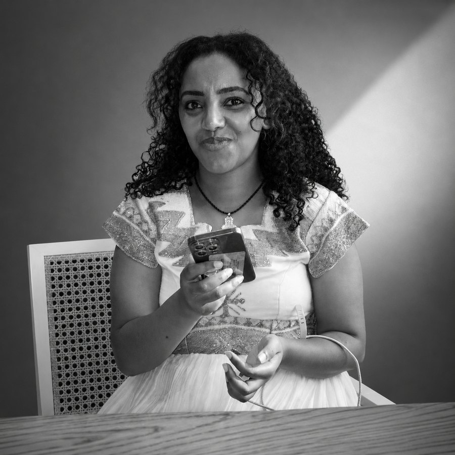
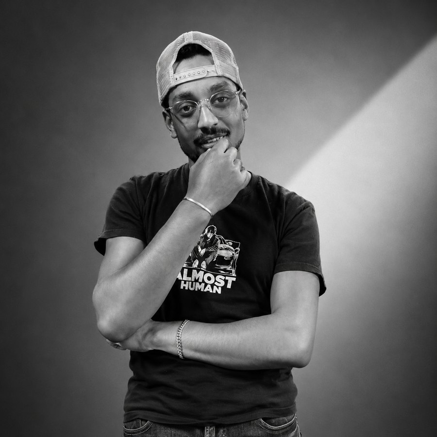

A reader's edition. The songs they reach for, in their words.


Send us an email with your favorite artist, your favorite songs, a line or two about why you love them, and a photo of yourself. If we pick you, your picks go in the next weekly update.
Email your picks 5127tr@gmail.comClicking opens a pre-filled message. Don't have email handy? Just send any photo and a short note to 5127tr@gmail.com.